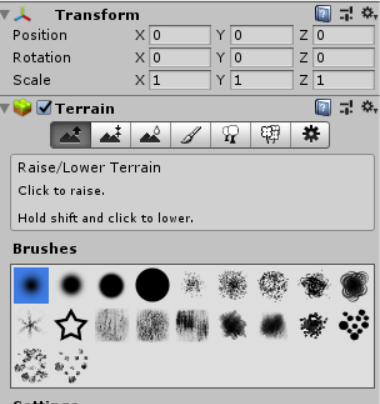
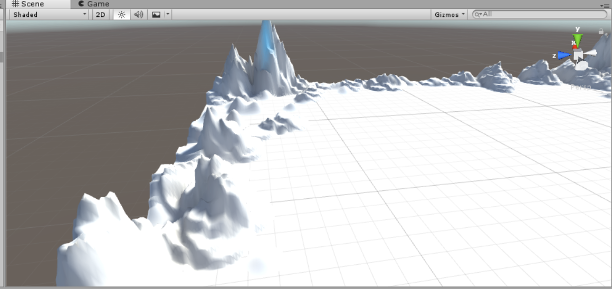
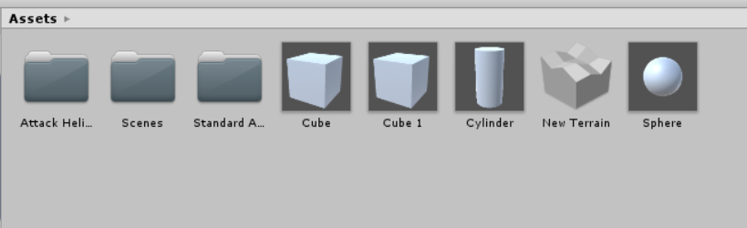
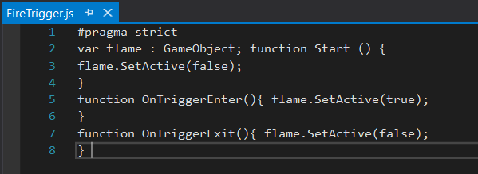
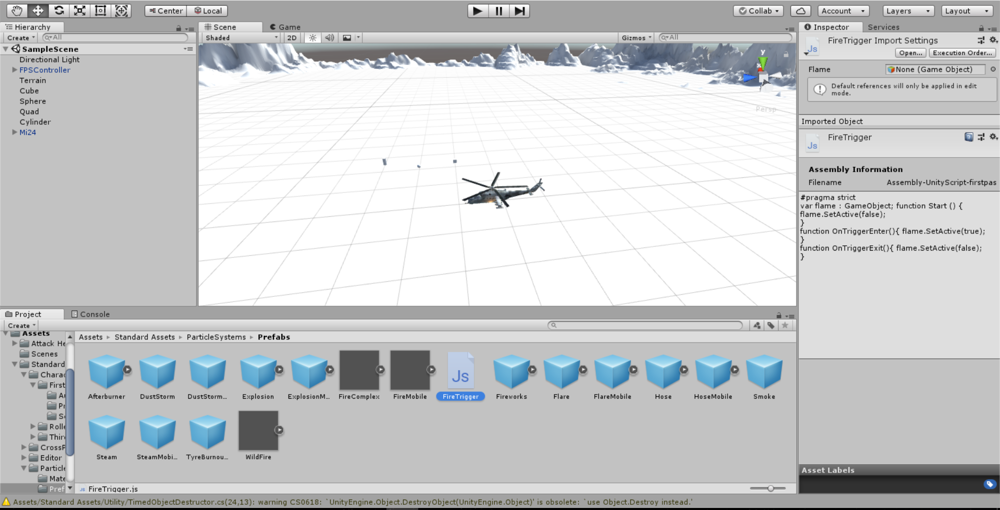
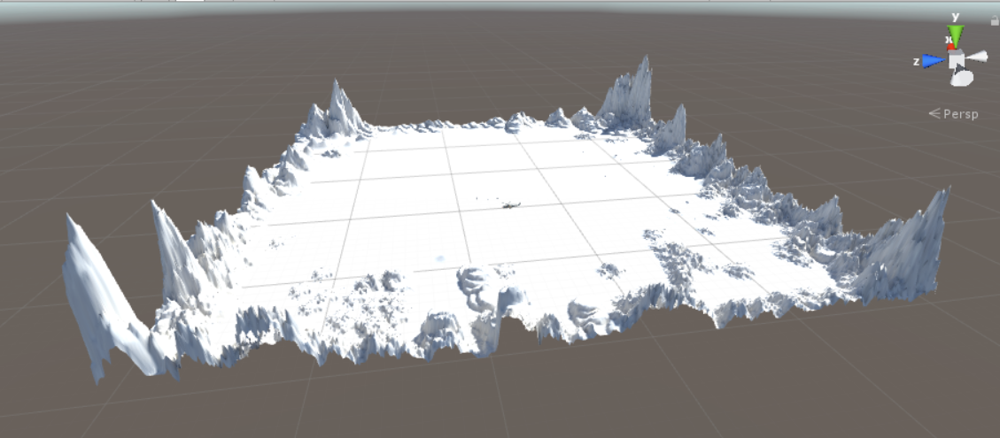
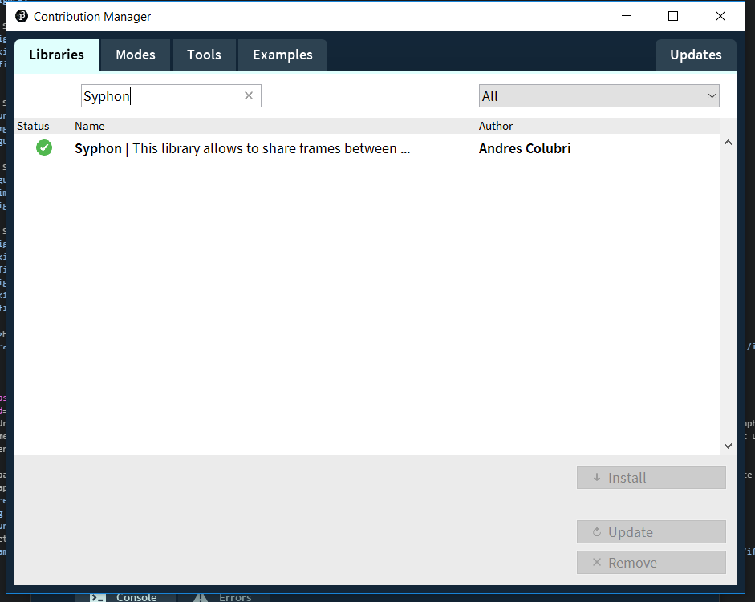
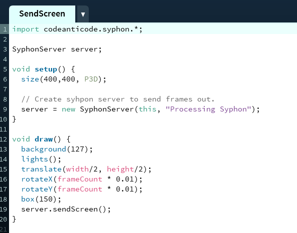

Voordat u start met de hele pagina door te lezen opzoek naar dat wat relevant is voor u,
laat mij helpen! Voor de assigment van Unity gaat u naar Unity.
Is dat toch niet wat u zoekt, maar wilt u zien hoe ik uit de voeten ben gekomen met Madmapper en de combinatie van Processing? Ga dan naar Madmapper.
Als laatst heb ik nog een reflectie geschreven die u nog wel zou willen lezen, ga dan naar mijn reflectie.
Unity
The Game
De opdracht voor Unity was de aangegeven stappen volgen om "wegwijs" te worden in Unity en een kleine "game" te kunnen maken. Het resultaat is ingeladen via een video.
Om een aantal stappen inzichtelijk te maken dat ik heb begrepen wat ik heb gedaan, heb ik een x- aantal screenshots toegevoegd om u door de grove lijnen mee te nemen in het project.
Stap 1 - opties voor bergen maken

Stap 2 - maak de bergen

Stap 3 - Laad alle assets

Stap 4 - Codeer het vuur

Stap 5 - Bekijk het resultaat


Het uiteindelijke resultaat
Madmapper
De opdracht voor Madmapper was via processing een nieuwe libary te downloaden en deze inladen. Daarnaast moest Proccesing samenwerken met Madmapper voor Syhphon. Het was de bedoeling om zelf "wegwijs" te worden.
De samenwerking tussen processing, Proccesing en Syphon werkt alleen via MACOS en omdat ik via een Windows PC werk, moest ik hiervoor een Mac lenen voor het uiteindelijke resultaat. Wel heb ik alle stappen eerst doorlopen op mijn eigen PC om
te zien of ik het niet kon laten werken. Hierdoor begrijp ik wel wat er gedaan moet worden.
Om een aantal stappen inzichtelijk te maken dat ik heb begrepen wat ik heb gedaan, heb ik een x- aantal screenshots toegevoegd om u door de grove lijnen mee te nemen in het project.
Stap 1 - Download Syphon

Stap 2 - Open Sendscreen

Stap 3 - Open Madmapper naast processing
Het uiteindelijke resultaat, dankzij een Mac van een klasgenoot.
The reflection
Algemeen
De afgelopen week ben ik bezig geweest met het leren kennen van Unity en Madmapper(in combinatie met Processing en Syhphon).
Unity, Madmapper en Syhpon waren voor mij nieuwe onderdelen en Processing had ik ook deze schoolperiode pas leren kennen.
Desalniettemin had ik al wel eerder gehoord van Unity, maar ik had mij laten vertellen dat het een hoop coderen was. Hierdoor heb ik mij tot noch toe nooit gemotiveerd gevoeld om hier iets mee te doen.
Unity
Mijn verwachting van Unity waren dan ook dat ik het zou ervaren als moeilijk en onplezierig. Dit was niet het geval en bleek dat ik mij teveel had laten “bang” maken door anderen.
In combinatie met de opdracht die uitgevoerd moest worden, een game ontwerpen door middel van visuele hulpen, viel het mij reuze mee. Het was wel ontdekken hoe het programma in zijn werk werkte,
maar het was leuk om te ontdekken. Het was ook leuk om per deel te zien dat wat ik deed wel werkte en dat ik per keer de goede stappen nam.
Madmapper
Madmapper was voor mij een nieuw programma om te leren kennen en juist daardoor had ik er niet veel verwachtingen bij. Ik had verwacht dat het coderen zou worden, maar verder had ik mij er nog niet in verdiept. Het was voor mij een aangename verassing om te lezen dat wij verder gingen met Processing. Ik kon met behulp van de reader er wel aardig mee uit de voeten. Mijn enige echte hinder was het feit dat ik werk op een Windows computer en geen Mac. Dit heb ik onderling met anderen kunnen oplossen waardoor ik wel alles heb kunnen doen dat ik moest doen.
Mijn ervaring met Madmapper is een meevaller geweest. Ik kan mij voorstellen dat aan de hand van Madmapper en Processing er interessante dingen kunnen gemaakt worden.
Verbeterpunt en wat ging er goed?
Voor Unity en Madmapper wil ik in het vervolg mee nemen dat ik mij niet meer laat beïnvloeden door verhalen die rondgaan.
Hierdoor ga ik met een openblik aan de slag met de nieuwe onderdelen in plaats van ervan uitgaan dat ik het moeilijk ga hebben.
Wat ik goed vond gaan was dat ik er aardig mee uit de voeten kon gaan. Niet alleen Unity maar ook Madmapper waren aan de hand van de reader goed te doen.
Het loslaten in de opdrachten werkt goed voor mij en dat geeft mij de mogelijkheid om zelf dingen te ervaren.